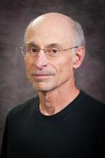

Christopher Michael Sorensen
Cortelyou-Rust University Distinguished Professor
University Distinguished Teaching Scholar
Physics and Chemistry (Adjunct)

Department of Physics
Kansas State University, Manhattan, KS 66506-2601
Telephone: 785-532- 1626
email: sor@phys.ksu.edu
Christopher M. Sorensen is the Cortelyou-Rust University Distinguished Professor
and a University Distinguished Teaching Scholar in the Departments of Physics and Chemistry
(adjunct) at Kansas State University. He received a B.S. in physics from the University
of Nebraska in 1969 where he was Phi Beta Kappa and a Woodrow Wilson Fellow. He was then
drafted and served in Vietnam; he returned to the world to earn his PhD from the University
of Colorado in 1977.
Sorensen has won numerous teaching awards. In 2007 he was named the CASE/Carnegie
Foundation United States Professor of the year for doctoral universities. A former student
Michelle Munson, President, CEO & Co-Founder of Aspera endowed $1M to initiate the C. M.
Sorensen Intellectual Property Incubator (2015). He has developed new curricula including
hands-on studios for Engineering Physics and Descriptive Astronomy.
Sorensen is an active scientist with nearly 300 publications, seven patents and two patents
pending. Google Scholar lists an h-index of 66 with 16,200 citations. He is a Fellow of the
American Physical Society, the American Association for the Advancement of Science and the
American Association for Aerosol Research. He is a past president of the AAAR and chaired its
annual meeting. His areas of scientific interest are light scattering, graphene synthesis,
particulate systems and synthesis. He and his students have developed and patented a novel
detonation synthesis of graphene; developed novel ways to understand particulate light
scattering; developed novel nanoparticle synthesis methods and studied their solution properties
and assembly from solution; studied gel formation in particulate dispersions; and have made
physical measurements on water supercooled deeper than any other lab in the world.
In his spare time Sorensen enjoys participating in sports and exercise, amateur astronomy and reading.
Vita
Biographical : Born October 1, 1947, Omaha, Nebraska. Married, one child.
Education : B.S. Physics, University of Nebraska, 1969; M.S., 1973, Ph.D., 1977 Physics, University of Colorado.
Military Service : August 28, 1969 July 19, 1971 (Drafted), USARV Vietnam, Rank: Sp/5.
Professional Experience: Assistant (1977-1982), Associate (1982-1986), Professor (1986-2000)
of Physics, Adjunct Professor of Chemistry (1987-present), University Distinguished Professor
(2000-present), Cortelyou-Rust University Distinguished Professor(2009 – present), Kansas
State University
Experience: Taught at all levels from non-science majors to graduate level physics. 45
of 80 semesters have been involved with large undergraduate fundamental physics class (see
list below).
Honors
- Phi Eta Sigma (1966)
- Phi Beta Kappa (1969)
- Woodrow Wilson Fellow (1969)
- Stamey Teaching Award (1990, 1994, KSU College of Arts & Sciences)
- Commerce Bank Teaching Award (1996)
- Schenk Physics Teaching Award (1996, 2006, KSU Physics)
- Commerce Bank Distinguished Graduate Faculty Member Award (1997)
- University Distinguished Professor (2000)
- Presidential Award for Outstanding Undergraduate Teaching (2002)
- David Sinclair Senior Scientist Award, American Assoc. for Aerosol Research (2003)
- Coffman Chair for Distinguished Teaching Scholars (2007)
- Making a Difference Award (2007, KSU Women in Science and Engineering)
- Carnegie/CASE National Professor of the Year for Doctoral Universities (2007)
- George Norlin Distinguished Alumnus Award, University of Colorado (2008)
- Olin Petefish Award in Basic Science, Higuchi-KU Endowment Award (2008)
- Fellow, American Association for Aerosol Research (2011)
- Iman Outstanding Faculty Award for Teaching, K-State Alumni Association (2011)
- Named one of the top 150 scientists in Kansas history by Ad Astra Kansas Initiative (2011)
- Fellow, American Physical Society (2012)
- Fellow, American Association for the Advancement of Science (2014)
- Michelle Munson, President, CEO & Co-Founder of Aspera endowed $1M to initiate the
- C. M. Sorensen Intellectual Property Incubator
Professional Societies
- American Association for Aerosol Research (Fellow)
- American Physical Society (Fellow)
- American Chemical Society
- Gesellschaft for Aerosolforschung
- American Association for the Advancement of Science (Fellow)
Synergistic Activities
-
Very active in the American Association for Aerosol Research. Served as president in 2007-
2008, the Board of Directors from 1995 to 1998, and chaired the annual meeting in 1997.
-
Created, developed and taught a “New Studio” course for sophomore-level fundamental
physics, that handles 450 students per year. This is now an integral part of our engineering
curriculum.
-
Adapted, developed and taught this New Studio concept to a three-semester optics
curriculum.
-
Created and taught a fundamental physics course for non-SMET majors, freshmen and
sophomores, which includes (~40%) reading and discussion of the writings of great physicists.
-
Created and teach a seminar course “Great Ideas in Physics.”
-
Co-created and developed and am primary lecturer for a 4 day summer workshop (EXCITE) for
teenage girls.
-
Lecture at ca. 5 high schools per year on science.
-
Supervise high school student research sponsored by ACS project SEED (over 18 years).
-
Supervised 19 MS, 16 PhDs, and 11 postdoctoral and over 60 undergraduates in research.
-
Associate Editor, Aerosol Science and Technology (1998 to 2011).
-
Co-Chair, Nanoparticle Synthesis and Assembly: Faraday Discussion 181 of the RSC, 20-22
April 2015 at Argonne national Lab, Chicago, IL, USA.
-
Faculty advisor to both the KSU Men’s and Women’s Rugby Clubs and the CrossFit Club.
-
Coached girls’ softball for 13 years.
Recent Significant University Service
-
Led the University to educate about and lead the public to witness the solar eclipse of August
21, (2017)
-
KSU Vice President for Research search committee (2014)
-
President Beta Chapter of Phi Beta Kappa (2013- 2014)
-
KSU Long Range Planning Committee (2012-2013)
-
Chair, Task Force for the Research, Scholarship and Creative Activities Enterprise at KSU (2010)
-
KSU President search committee (2008-2009)
-
KSU Research Foundation Board of Directors Executive Committee (2004-2009)
-
KSU Research Foundation Board of Directors (2002-2009)
-
Ron and Rae Iman Outstanding Faculty Awards committee (2007-2009)
-
Dean’s Advisory Committee (2005-2008)
-
Primary texts program advisory committee (2003-present)
-
Honors program advisory committee (2006-present)
-
State of Kansas DEPSCoR Committee (2004-2008)
-
KSU Intellectual Property Advisory Committee (1997-2004)
-
Kansas Board of Regents Natural Sciences Review Team (2000-2001)
-
Faculty Development/University Small Research Grant Awards Committee (1996-2000)
-
University Distinguished Teaching Scholar Selection Committee (Chair) (1997-1999)
-
Presidential Lecturer (1986-present)
Patents
-
Encapsulated Nanometer Magnetic Particles, US Patent No. 6,045,925. April 4, 2000;
with Klabunde and Zhang.
-
Synthesis of Monodisperse Gold Colloids by the Solvated Metal Atom Dispersion (SMAD)
Method and their Organization in 2D-and 3D-Structures. US Patent No. 6,562,504, May
13, 2003, with Stoeva and Klabunde.
-
Glass Composite Including Dispersed Rare Earth Iron Garnet Nanoparticles, US Patent
Number 6,790,521B1 (Sept. 14, 2004) with S. Taketome and K. Klabunde.
-
Glass Composite Including Dispersed Rare Earth Iron Garnet Nanoparticles, US Patent
Number 7,078,071B2 (July 18, 2006) with S. Taketome and K. Klabunde.
-
Novel Siloxanes and Methods of Synthesis Thereof using Metallic Nanoparticles Catalyst,
with B. Prasad and K. Klabunde, US Patent Number 7,244,799 (July 17, 2007).
-
Creation of Ultralow Density Porous Materials via Aerosol Gelation: Aerosol Gels, C. M.
Sorensen, A. Chakrabarti, R. Dhaubhadel and C. Gerving; US Patent Number 7,691,909
issued on April 6, 2010.
-
Process for High-yield Production of Graphene via Detonation of Carbon Containing
Material, C. M. Sorensen, A. Nepal, G. P Singh, U.S. Patent No. 9,440,857; September 13,
2016.
-
Direct Dissolution of Bulk Materials to Nanoparticles, Christopher M. Sorensen, Stefan
Bossmann, Xiao-Min Lin, Emily J. McLaurin, Jessica Changstrom, Pablo Guimera Coll,
Jeffrey Alan Powell, Hongwang Wang, and Asanka Sajini Yapa. US Patent filed June 16,
2014.
-
Steven J. Eckels, B. Terry Beck, Mohammed H. Hosni, Christopher M. Sorensen, Donald Tomasi,
“The Metastable Critical Flow Thermodynamic Refrigeration Cycle,” Provisional Patent
Application No. 62/415,722 filed on November 1, 2016.
Recent Talks of Note
-
Shaw Memorial Lecture, “Fire, Fractals and Physics”, University of Southern Illinois at
Edwardsville, December 5, 2007.
-
Provost’s Lecture, “A University without Walls”, Kansas State University, April 24, 2008.
-
Commencement Address, Kansas State University graduate school, December 12, 2008.
-
Commencement Address, Kansas State University-Salina, December 12, 2008.
-
Keynote address, “Advice to the Young Professor”, at the University of Nebraska at Lincoln 19 th
annual Workshop for Graduate Teaching Assistants, August 18, 2009.
-
Friedlander Plenary Lecture, “From Single Particles to Aerosol Gels: Thirty Years of Fractal
Aggregates”, at the 30 th Annual meeting of the American Association for Aerosol Research,
Orlando FL, October 7, 2011.
-
Commencement Address, Kansas State University College of Arts & Sciences, December, 2012.
-
Lecturer on Scientific American Bright Horizons 16 (Patagonia Cruise) Feb. 20 to Mar. 5, 2013.
Five talks on science.